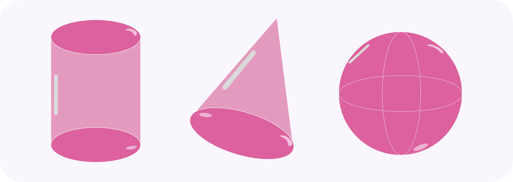

Bidang Ruang Geometri
Mari belajar geometri — memahami dunia lewat bentuk dan ruang!

Pernahkah kamu memperhatikan bentuk ubin lantai, jaring laba-laba, atau pola Bintang di langit malam? Semua itu berkaitan dengan geometri! Di sini, kita akan menjelajahi bagaimana titik, garis, sudut, dan bangun dapat membentuk dunia di sekitar kita. Kamu akan belajar mengenali sifat-sifat bentuk datar dan ruang, menghitung luas dan volume, hingga memahami simetri dan transformasi yang membuat desain jadi indah dan teratur. Siap melihat keindahan matematika dalam setiap bentuk di sekitarmu?
Mulai Belajar Sekarang!Kenapa & Dari Mana?
Geometri adalah cabang matematika yang mempelajari bentuk, ukuran, posisi, dan hubungan antar objek di ruang. Kata geometri berasal dari bahasa Yunani, geo yang berarti bumi dan metron yang berarti pengukuran. Awalnya, geometri berkembang di Mesir Kuno ketika masyarakat perlu mengukur ulang tanah setelah banjir Sungai Nil, dari situlah lahir konsep titik, garis, dan bidang yang kita kenal sekarang.
Dengan konsep geometri, kita dapat memahami dan menghitung berbagai hal di sekitar kita: mulai dari menentukan luas tanah, merancang bangunan, membuat peta, hingga mendesain pola batik dan arsitektur modern.
Geometri juga menjadi dasar bagi banyak bidang ilmu lain seperti teknik, arsitektur, komputer grafis, robotika, bahkan astronomi. Jadi, dengan memahami asal-usul dan kegunaan geometri, kita bisa melihat bahwa geometri bukan sekadar hitungan bentuk, tetapi bahasa universal untuk memahami ruang dan dunia.
Apa itu geometri?
Geometri adalah ilmu yang membahas tentang hubungan antara titik, garis, sudut, bidang dan bangun-bangun ruang.
Secara umum, geometri terbagi menjadi dua jenis utama:
- Geometri Datar (2D) yaitu geometri yang mempelajari bangun yang hanya memiliki panjang dan lebar, seperti segitiga, persegi, dan lingkaran.
- Geometri Ruang (3D) yaitu geometri yang mempelajari bangun yang memiliki panjang, lebar, dan tinggi, seperti kubus, balok, tabung, dan bola.
a. Unsur dan Konsep Dasar Geometri
- Titik
Menunjukkan posisi tanpa ukuran. Dilambangkan dengan huruf kapital (A, B, C).
➜ Contoh: lokasi pada peta.
- Garis
Kumpulan titik yang memanjang tanpa batas ke dua arah.
➜ Contoh: tepi meja, benang, atau jalan lurus.
- Bidang
Permukaan datar tempat titik dan garis berada.
➜ Contoh: permukaan papan tulis.
- Sudut
Terbentuk dari dua garis yang berpotongan di satu titik.
➜ Contoh: pojok buku (90°), garis lurus (180°).
- Bangun Datar (2D)
Memiliki panjang dan lebar.
➜ Contoh: segitiga, persegi, persegi panjang, lingkaran.

- Bangun Ruang (3D)
Memiliki panjang, lebar, dan tinggi.
➜ Contoh: kubus, balok, tabung, kerucut, bola.

- Simetri dan Transformasi
Simetri menunjukkan keseimbangan bentuk, sedangkan transformasi mencakup perubahan posisi (refleksi, translasi, rotasi, dilatasi).
➜ Digunakan dalam desain, animasi, dan grafis komputer.
Geometri bukan sekadar pelajaran tentang bentuk dan ukuran, tetapi juga cara kita memahami dunia di sekitar. Melalui titik, garis, bidang, dan bangun ruang, kita belajar melihat keteraturan dan keindahan dalam setiap pola yang ada di alam maupun hasil karya manusia. Dengan memahami konsep geometri, kita dapat mengaplikasikannya dalam kehidupan sehari-hari — dari desain, arsitektur, hingga teknologi modern. Mari terus menjelajahi geometri dan temukan bagaimana matematika hadir di setiap sudut kehidupan kita.
Uji Pemahamanmu!
Saatnya Pop Quiz!!
Seberapa jauh pemahamanmu tentang Bidang Ruang Geometri? Ayo coba kuis seru ini!
Klik Gambar dibawah ini!
klik link berikut jika tetap tidak muncul: Quiz GeometriSumber Belajar
Berikut adalah sumber pembelajaran tambahan untuk membantu kamu untuk lebih memahami materi ini: